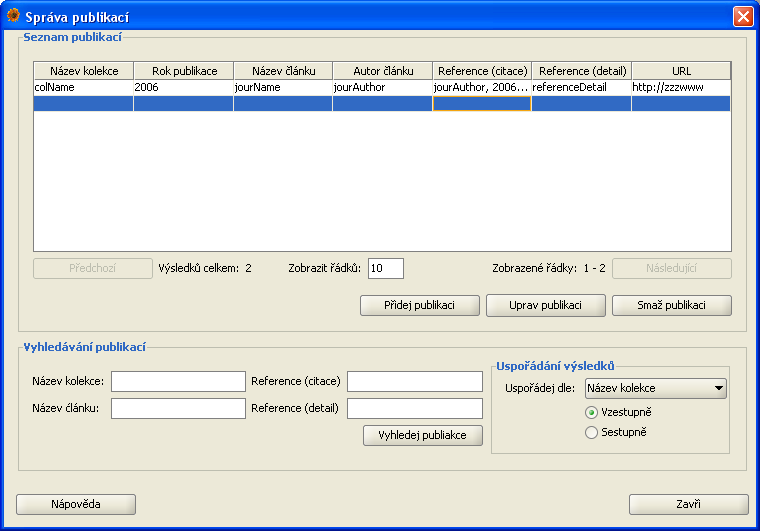
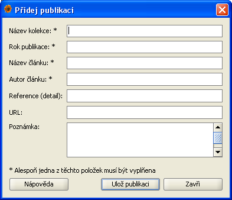

Správa publikací
Správa publikací umožňuje uživateli přidávat, upravovat a vyhledávat publikace, ve kterých byly nálezy
publikované. Dialogové okno se správou publikací je možné otevřít pomocí menu Data|Správa publikací.
Dialog pro správu publikací se skládá ze dvou základních částí:
- Seznam publikací - publikace, které jsou výsledkem posledního hledání
- Vyhledávání publikací - zde můžete zadat kritéria pro vyhledávání publikací

Seznam publikací
Po úspěšném vyhledání jsou výsledky zobrazeny v této části formuláře. Výsledky jsou zobrazeny po stránkách,
proto nejsou bezprostředně po vyhledání zobrazené všechny publikace. Pro přecházení mezi jednotlivými
stránkami výsledků použijte tlačítek Předchozí a Následující které najdete pod tabulkou se seznamem
publikací. V případě, že chcete zobrazit více záznamů na jedné stránce, zadejte počet zobrazovaných záznamů
do pole pod tabulkou se seznamem publikací a stiskněte klávesu enter. Vedle tohoto pole se taktéž
nachází informace celkovém počtu nalezných záznamů a rozsah který je právě zobrazen.
Tato část formuláře obsahuje taky tlačítka pro přidávání, úpravu a mazání publikací. Tlačitka Přidej
publikaci a Uprav publikaci otevřou dialogové okno pro přidávání/úpravu publikací (viz níže). Tlačítko
Odeber publikaci smaže (po potvrzení uživatelem) vybranou publikaci. Pro úpravu nebo smazání publikace
musí být daná publikace vybraná v tabulce se seznamem publikací (v opačném případě systém uživatele
upozorní že není vybraná žádná publikace). Úpravy a mazání publikací podléhá systému oprávnění v Plantlore.
Pro podrobnější informace o systému oprávnění navštivte sekci Práva.
Vyhledávání publikací
Dialog pro správu publikací umožňuje vyhledávání podle 4 parametrů: Jméno kolekce, název článku, citace a
podrobné informace. Výsledky můžou být uspořádané podle jména kolekce, roku publikace, jména článku, autora
článku, citace a podrobných informací vzestupně nebo sestupně. Řetězec pro vyhledávání nemusí přesně
odpovídat položce v databázi, nalezeny budou všechny záznamy, u kterých je zadaná položka podřetězcem
odpovídajíci položky v databázi. Po zadaní parametrů pro hledání se vyhledávaní spouští tlačítkem Vyhledej
publikace.
Vyhledávání nerozlišuje malá a velká písmena.
Po otevření dialogového okna pro správu publikací se zobrazí všechny dostupné publikace. Pro pozdější
zobrazení všech publikací stiskněte tlačítko Vyhledej publikace bez vyplnění vyhledávacích parametrů.
Dialogové okno pro přidávaní nebo editaci publikací se otevírá z hlavního okna správy publikací tlačítkem
Přidej publikaci resp. Uprav publikaci. Toto okno obsahuje následující položky:
- Jméno kolekce - Jméno kolekce do které daná publikace patří. Maximální délka této položky je 255 znaků.
- Rok publikace - Rok, ve kterém došlo k publikaci nálezu.
- Název článku - Název článku, ve kterém byl nález publikován. Maximální délka této položky je 255 znaků.
- Jméno autora článku - Autor článku ve kterém byl nález publikován. Maximální délka této položky je 255 znaků.
- Detail - Detail odkazu na článek. Maximální délka této položky je 100 znaků.
- URL - URL odkazující na publikaci. Maximální délka této položky je 100 znaků.
- Poznámka - Jakákoli další informace o publikaci. Maximální délka této položky je 4096 znaků.

Pokud přidáváte novou publikaci, vyplňte jednotlivé položky a stiskněte tlačítko Ulož publikaci. Alespoň
jedna z následujících položek musí být vyplňena: Autor článku, rok publikace, jméno článku, jméno kolekce.
V případě, že upravujete už existující publikaci, vyplní se parametry vybrané publikace do formuláře a
můžete je upravit. Pomocí tlačítka Ulož publikaci se změny uloží do databáze. Tak jako u přidávání
publikací, alespoň jedna z těchto položek musí být vyplněná: Autor článku, rok publikace, jméno článku,
jméno kolekce